Memory Harnesses for Long-Running Research Agents
Gives an empirical result on recall-policy design for long-horizon agent tasks, testing memory-off, vector RAG, a ranked decisions ledger, and a ground-truth oracle on an X-Bench-style needle task, run locally on quantized open models
If you only read one thing
- Long-horizon tasks suffer context rot (contradiction, redone work, drift); Druga ran her experiments locally on an M3 Ultra with 96GB/28-core, using quantized Qwen 27B (4-bit) and DeepSeek V4 Flash (c1, c3).
- When a task's relevant information fits inside the context window, adding a memory harness doesn't improve performance, only cost (c4).
- On an X-Bench-style task where the needed answer was 376 steps outside the current context, a ranked decisions-ledger recall policy outperformed vector RAG and even beat a ground-truth oracle, because the oracle supplies the right memory but doesn't force the model to use it correctly (c5, c6).
This traces Druga's write-manage-read harness and the four recall modes she swapped in while holding the model fixed; the ledger beating both RAG and the oracle on the X-Bench needle task is her headline result (ours).


Context rot on long-horizon tasks, tested locally
- Druga defines context rot as the model contradicting itself, redoing work it forgot it already did, or drifting from the original question as context grows.
- She ran her experiments on-device using an M3 Ultra Mac with 96GB RAM and 28 CPU cores, running quantized Qwen 27B (4-bit) and DeepSeek V4 Flash, motivated partly by a public example of Coinbase cutting AI spend while increasing usage by shifting to more local models with better routing and caching.
“the model starts contradicting itself, or it has to redo the work because it forgot it did that task in the first place”
said at 00:31“on this M3 Ultra with 96 GB and 28 core CPUs, I'm using two models. I'm using the Qwen 27B quantized at 4-bit”
said at 03:07When memory helps, and when it doesn't
- On a literature-review task where all relevant papers fit inside the context window, adding a memory harness produced the same performance as no memory, only extra cost, meaning memory retrieval added no capability when the task already fit in context.
“when your task fits in context, the harness doesn't add much.”
said at 06:17Ranked recall wins on X-Bench
- On an X-Bench-style task where the correct answer sat at step 124 but the question was asked at step 500, well outside the context window, the ranked decisions-ledger recall policy retrieved the right answer more often than vector RAG or no recall, and even beat the ground-truth oracle.
- Druga explains the oracle underperforms because it supplies the correct memory without forcing the model to actually use it, so the model can still retrieve or ignore it incorrectly.
- The result held across both tested models and across a second benchmark, Spider V2.
“And what I found was that the rank only ledger performed the best.”
said at 08:21“the model can get the right memory but still retrieve the wrong information or choose to ignore it or be confused”
said at 08:51


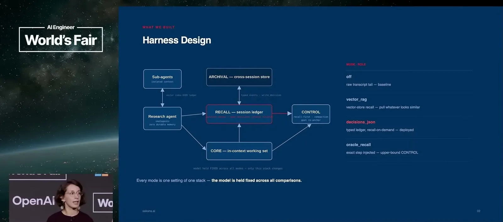
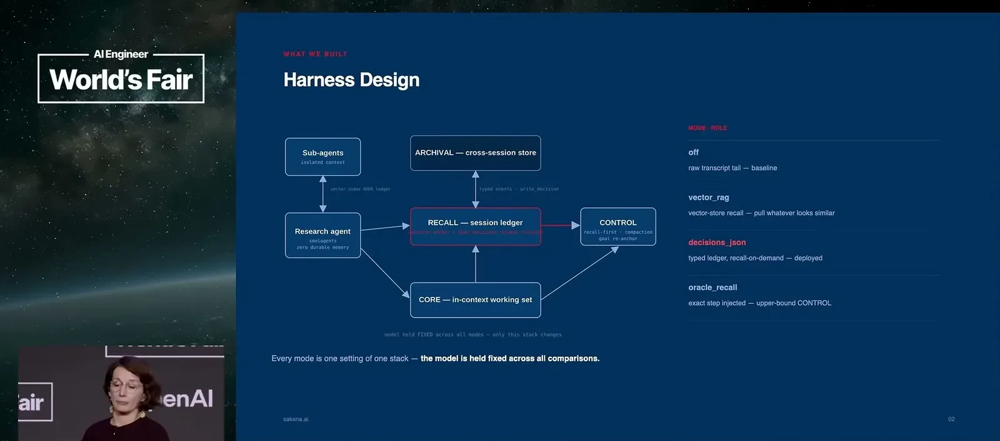
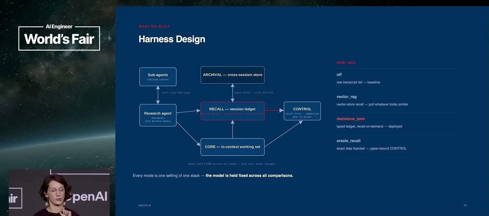
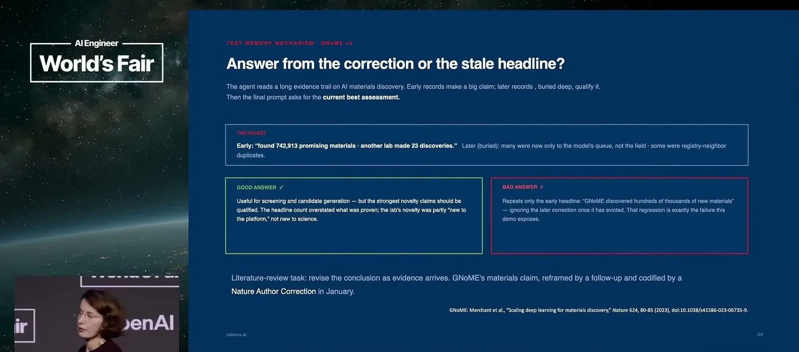
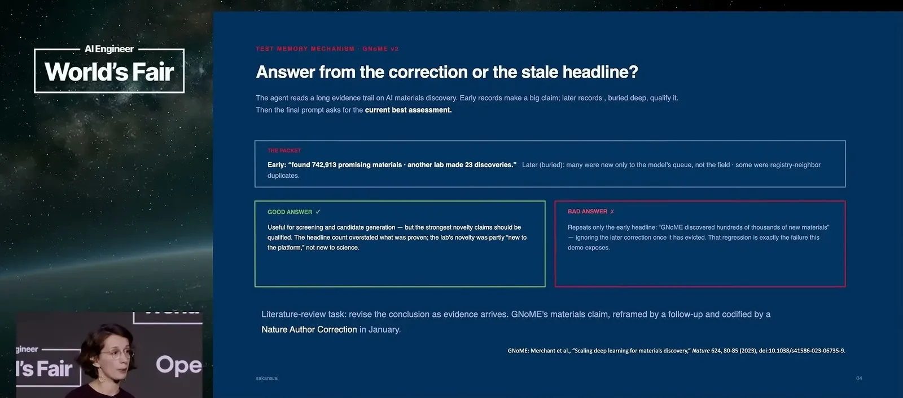
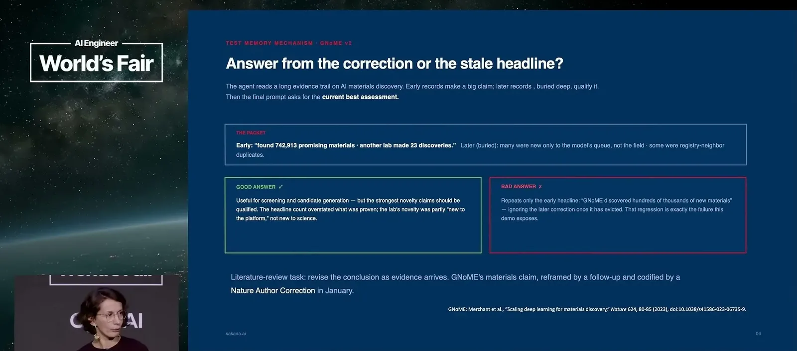
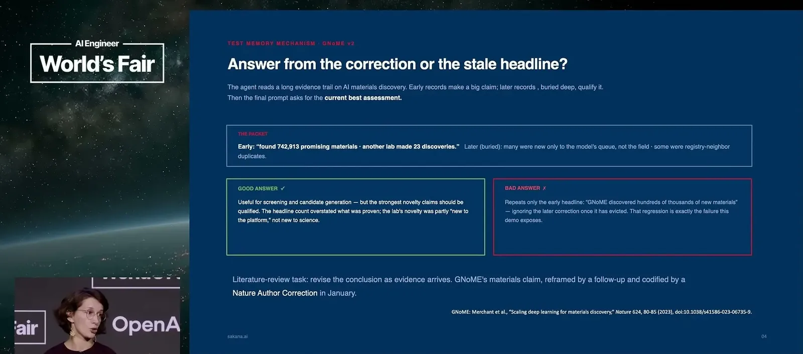
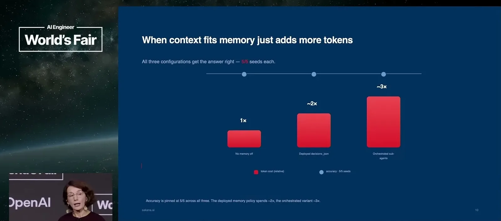
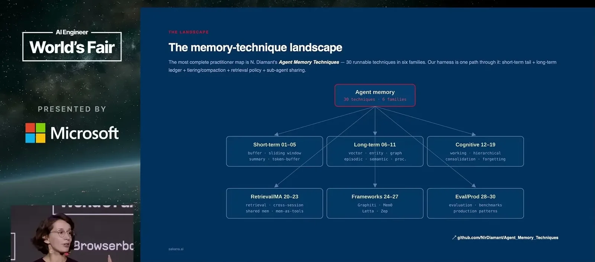
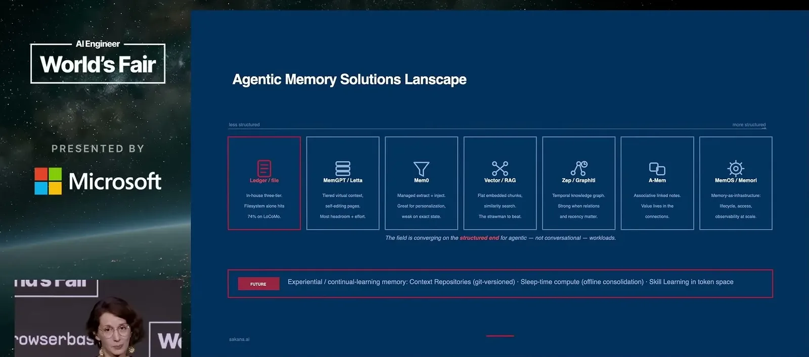
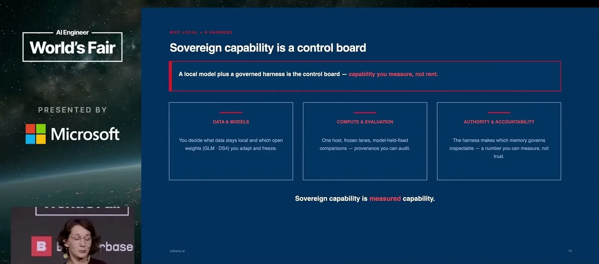
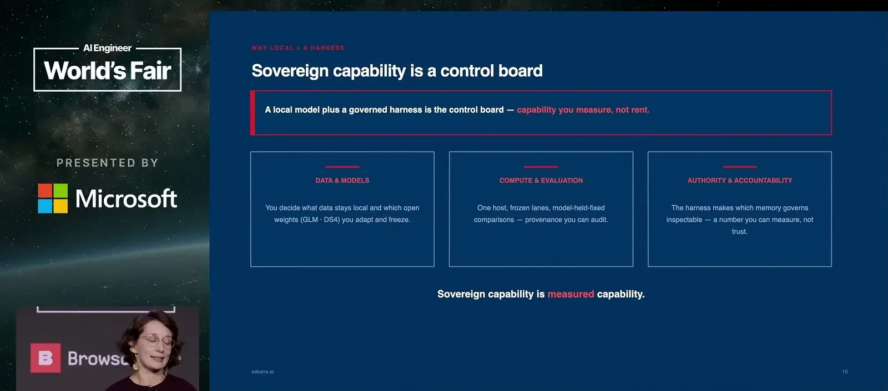
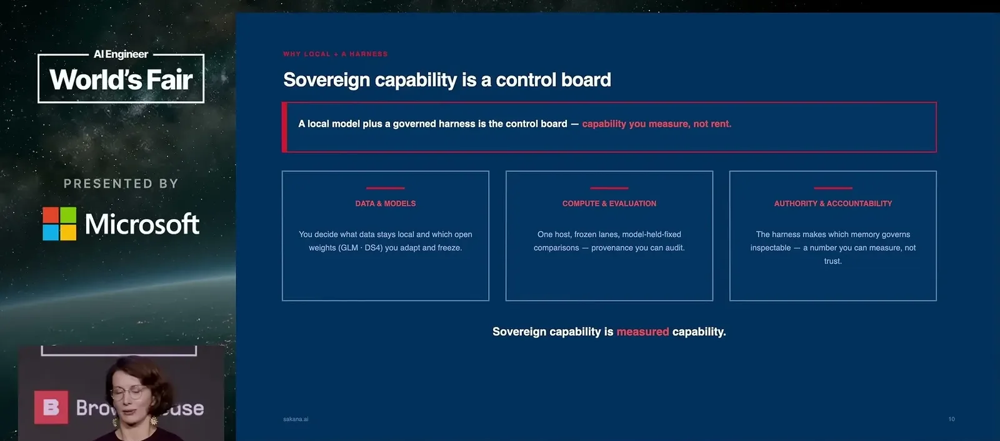
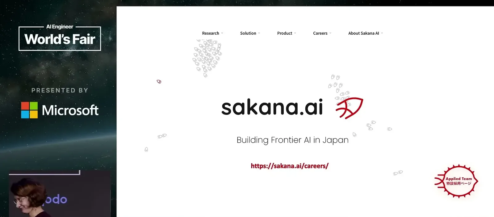
Underlying detail — every claim, typed and timestamped (7)
| Stance | Claim | t |
|---|---|---|
| asserts | Context rot shows up as the model contradicting itself, redoing forgotten work, and drifting from the original question on long-horizon tasks. | 00:31 |
| asserts | Coinbase's CEO reported reducing AI spend while increasing AI usage by shifting to more local models with better routing and caching. | 01:36 |
| asserts | Experiments ran on an M3 Ultra with 96GB RAM and 28 CPU cores, using quantized Qwen 27B (4-bit) and DeepSeek V4 Flash. | 03:07 |
| asserts | When a task's relevant information already fits inside the context window, a memory harness adds no performance benefit, only extra cost. | 06:17 |
| asserts | Among the tested recall policies, the rank-only decisions ledger performed best on the X-Bench long-horizon retrieval task. | 08:21 |
| warns | A ground-truth memory oracle doesn't reach maximum performance because it provides the right memory without forcing the model to correctly use it. | 08:51 |
| recommends | A good recall policy should be treated as a first-class metric because bad memory retrieval burns tokens and can send the agent down the wrong path. | 09:22 |
Machine-readable copy embedded in this page (script#ontology) and in the corpus ontology.